The Careful Art Of Listening
Learn to listen to nature and you’ll discover a whole new world.
By Terry Krautwurst
April/May 2008
It’s true that we humans tend not to see the forest for the trees. To an even greater extent when we’re outdoors, though, we fail to hear the forest for the seeing. We let our eyes be our guides when sounds, not sights, often provide more information about the life around us, most of it hidden or too distant to see.
The rush of shifting wind through treetops. The gurgle of stream water tumbling over stone. The hmmmm and bzzzzz of insects. The piercing call of a faraway bird. These are only a few of the sounds of the living forest. Some are constant; others fleeting. But all are components in a symphony that is not merely unfinished but perpetual, playing night and day. It is a work ever-in-progress worth listening to, carefully. Nature’s sounds not only soothe our civilized souls, but also tell tales of their makers’ lives.
Hush Up and Listen
You’re not likely to hear - or for that matter, see - wildlife unless you force yourself to take time out from whatever you’re doing outdoors and just sit still, for cryin’ out loud. All too often when I am outdoors the most dominant sound in my ears is the clump-clump-clumping or crunch-crunch-crunching of my own rambling feet. The sad truth is, we humans are a noisy, restless lot. What do most of us do in the great outdoors? We hike, we bike, we fish, we camp, we canoe, we rock climb, we move - almost constantly, and seldom silently. Most of us also carry another kind of noise into the woods with us from civilization: that infernal inner voice nagging us with everyday worries and jangled nerves.
All of that has to go. Remaining still and quiet and actually paying attention to audible nature is an ear-opening experience. But it’s not one that comes to us easily. And here’s the hardest part: You can’t just stop, listen for a few moments and then move on. You have to give the process time - time for you and your gotta-move human nature to settle down and truly tune in to sound, and time for the creatures around you to recover from the alarming cacophonous crashing of your arrival.
Try this the next time you’re outdoors: Look around for a tree with a base sufficiently wide to serve as a back rest and enough level ground beneath to serve as a seat. Make a comfortable cushion of leaves, pine needles or an old shirt, and sit down. Now relax. Never mind listening or watching for anything; just let your muscles go limp. Take easy, deep breaths. Focus entirely on the in and out of your breathing. Don’t let restlessness or thoughts of other matters creep back into your consciousness; stay relaxed and breathe slow and easy. Shhhh. Breathe easy. Relax. Stay still.
The technique may take several minutes (and several tries), but eventually that internal noise of yours will quiet down, and if you remain still the wildlife around you will forgive and forget your crashing. Soon enough the sounds of the forest normal will return. And soon too you will begin to notice the “notes” of individual players in the symphony: a skitter in a treetop; a chick-chick of tiny teeth gnawing on nut or bark; a tap-tap-tap of pointed beak on wood. Let your ears do the locating, then see if your eyes can zero in on the source. Most wildlife is much harder to see than to hear, by virtue of camouflage coloration and patterning, not to mention instinctive adeptness at concealment - a key to survival.
If you have trouble picking up or focusing on faint sounds, you can use an easy technique to boost your listening powers: Just cup your hands behind your ears and push them forward slightly with your thumbs and index fingers. In effect, you’re giving yourself bigger sound catchers. You’ll be surprised at how much more you can hear. Go ahead - try it now. Better yet, go outdoors and listen to a bird without your “new” ears, and then with them. The method is especially handy for pinpointing the direction from which a sound is coming - it’s like adding a zoom lens to your ears.
What Is That Sound?
The real art in woods-listening is not so much hearing sounds as it is identifying them. That loud rustling in the leaves - is it a scampering squirrel, or simply a brown thrasher living up to its name? That sharp snap of cracking wood - a twig surrendering to the weight of an approaching deer, or just a brittle branch giving in the wind? In the forest, even silence - a sudden stillness, perhaps caused by the passing of a predator - tells tales.
Most of us already command a considerable, if underused, vocabulary of known nature sounds. Some birds’ utterances virtually identify themselves - the whippoorwill’s repeated namesake call, the chickadee’s chick-a-dee-dee-dee, the crow’s caw, the bubbling goblgoblgobl of a wild tom turkey. Then there are the sounds familiar from our own back yards - the cardinal’s bright purdy-purdy-purdy, the robin’s whistling cheerup-cheery-cheerio-cheerup, the chattering chrrr of a scolding red squirrel. Other sounds are emblematic of one’s home region. Those who grew up in the Far North know the loon’s eerie wavering wails. A surprisingly similar but squeakier call, followed by two or three guttural grunts, signals westerners in the Rockies to the presence of an entirely different creature: a bugling bull elk.
Some sounds require no learning at all - you need never have heard a rattlesnake’s harsh rattle, a cougar’s throaty growl, or the no-nonsense gruff huff huff of a rankled grizzly or black bear to get the message loud and clear.
But more often than not, the sounds you hear outdoors are of a subtler or less identifiable sort. That small, barely visible bird making a quick, rolling tap-tap-tapping high in a tree: It’s a woodpecker drumming to attract a mate, yes, but is it a downy, or a hairy? (Downy woodpeckers drum rapidly, about 15 times a second - but hairy woodpeckers drum even faster, at nearly twice the speed, about 25 times a second.) That howl in the darkness - is it a dog, or a coyote? (Coyotes possess a distinctly higher-pitched voice than most dogs, and usually add yips and yaps to their songs.) In spring’s nightly frog chorale at the pond, the bullfrogs singing bass are obvious enough - but who are all those baritones and tenors, and which species are calling out which tunes? Just what kinds of insects are doing that buzzing, humming and rasping in complex rhythms on a summer’s eve?
Chances are you’ll never need, or want, to put names to every individual song maker you hear in the outdoors. There are, after all, nearly 70 species of “true” and “false” katydids in the United States and Canada, more than 40 species of ground and tree crickets and dozens of other sound-producing members of the insect family alone. And there are equally vast and confusing orchestras of birds, mammals, amphibians and others. But listening carefully to nature’s sounds - and learning at least some of the identities behind them - can help you begin to distinguish one sound from another, giving you a greater appreciation not only for specific songs but also for the astonishing depth and variety of our planet’s vast auditory repertoire.
Fortunately, the digital age has made it easier than ever to school yourself in Nature Sounds 101 and beyond. Excellent books, recordings and Web sites designed to help you learn the songs and calls of birds, frogs, toads, insects and other animals are available to the aspiring sound student - see “Natural Sound Bytes,” below, for a partial listing.
Lifelong Learning
Although books and other aids may be able to help, there’s no substitute for firsthand experience when it comes to any sort of nature appreciation. It’s not just an ability to identify sounds, but also an understanding of their meanings, that comes to those who spend time listening carefully. In the southern Appalachians, old-timers searching the backwoods for medicinal ginseng knew to follow the maniacal call of the “sang bird”: the pileated woodpecker, which once kept mostly to the rich, shaded cove habitat favored by that plant. In the West, veteran hunters have learned to discern the rustlings of mule deer traveling through brush from those of smaller whitetail deer that share the same range. Birdwatchers seeking day-roosting owls listen for the excited caws of mobbing crows, a good sign that the birds will be circling an owl (or hawk) squatting in a tree in their territory.
Only time and experience can give you the discriminating ear of the true woodsperson. It is a learning process, a listening process, a learning-some-more process. And there’s no time like now - when spring sparkles with the songs and sounds of renewal - to sit down, stay still, and perk up your ears.
Calls of the Wind
Spring
Eee-o-lay!
Wood thrush
“Whenever a man hears it he is young, and Nature is in her spring,” wrote Henry David Thoreau.
When and where: mixed woods at dawn and dusk; eastern half of the United States.
Listen
Phweeeeeeet!
Groundhog
Among spring’s earliest-emerging mammals is the ever-hungry groundhog or woodchuck, also called “whistle pig” for the quick, sharp whistle it produces when alarmed.
When and where: daylight hours in open fields and hedgerows, usually near cultivated crops; Northeast, Midwest, upper south United States, and southern Canada.
Listen
Summer
Chirp-chirp-chirp-chirp-chirp
Snowy Tree Cricket
The snowy is known as the thermometer cricket: Count the number of its high-pitched musical chirps in 15 seconds and add 40 to calculate the outdoor temperature in Fahrenheit.
When and where: evenings in shrubbery and forest edges; throughout the United States, except for the coastal Southeast and northern border states.
CHICK-bree!
Scarlet Tanager
Despite its striking color, you’re more likely to hear than see this elusive summer singer. Its song resembles a raspy robin’s, but its intermittent CHICK-bree! call is unmistakable.
When and where: daytime, high in hardwood forest canopies of the Midwest and East.
Listen
Fall
Katy-did She-did She-didn’t
Common True Katydid
Commencing in late summer and intensifying in early fall, the rhythmic choruses of katydids can be so loud that they drown out nearly all other sounds.
When and where: evenings in the crowns of deciduous trees in the East except northern border states, west to Oklahoma.
Wonk! Wonk!
Canada Goose
No sound in nature says autumn quite so distinctly as the conversational jabber-honking of Canada geese winging their way southward.
When and where: daytime along inland and coastal migration routes throughout the United States.
Listen
Winter
Peter-peter-peter
Tufted Titmouse
Shuttling busily back and forth between bird feeders and trees, where they stash seeds in bark crevices, the jaunty tufted titmouse is more vocal than ever in winter.
When and where: daytime in suburban yards and mixed woods from the Great Plains east.
Listen
Hoo-h-HOO! Hoo! Hoo!
Great Horned Owl
Among the earliest of birds to breed, pairs of great horned owls call to each other from December through February. Males, though smaller, have deeper voices.
When and where: dusk to dawn in woods and parks throughout the United States and most of Canada.
Listen
Natural Sound Bytes
You can sharpen your nature-listening ears even as you (eck) sit indoors, thanks to a variety of helpful books, recordings and Web sites. Here’s a sampling of recommended sources.
Books, Recordings and Software
Guide to Birds of North America, Thayer Birding Software. A computerized field guide and tutor that can help you identify 925 species of birds in the United States and Canada. Includes the songs of more than 700 species, as well as photos, videos, species profiles, range maps, regional lists, self-quizzes and other useful features.
Birding By Ear: A Guide to Bird-Song Identification, by Richard K. Walton and Robert W. Lawson (Houghton-Mifflin). There are actually three different titles in this audio field guide series: a Western version, an East/Central version and More Birding by Ear for the East. All include informative booklets and three CDs (cassettes are also available). Recordings group similar-sounding bird songs together and point out the differences between, for example, the songs of mockingbirds and catbirds, field sparrows and white-throated sparrows.
The Singing Life of Birds: The Art and Science of Listening to Birdsong, by Donald Kroodsma (Houghton-Mifflin). A fascinating, in-depth look at bird songs, with a supporting CD of recordings. The book discusses the finer points of listening, including how birds learn their songs and how those songs vary among birds of the same species.
The Calls of Frogs and Toads, by Lang Elliott (Stackpole Books). A revelation to anyone who’s admired a pond-side chorus of frogs and toads. The book and CD provide photos, facts and recordings of more than 40 species in the central and eastern United States.
The Songs of Insects, by Lang Elliott (Houghton-Mifflin). A beautifully photographed 224 page book with excellent text and an accompanying CD featuring recordings of 75 different crickets, katydids, grasshoppers and other insect vocalists of the central and eastern United States.
Web Sites
Naturesongs.com A general site for sampling nature’s diverse sounds, with more than 1,000 digital recordings of birds, mammals, amphibians, reptiles, insects and even weather.
Cornell Lab of Ornithology Macaulay Library of Animal Sounds Called the world’s largest archive of animal sounds and video, with 160,000-plus recordings from around the world - from bats to baboons, woodpeckers to walruses.
Learn Bird Songs Simple, easy-to-use site featuring the sounds of common North American birds in four habitats: city, forest, wetlands and countryside. With excellent material on how to learn bird songs and where to find additional aids.
Amphibia Web A searchable database of the world’s frogs, toads, salamanders and other amphibians. About 150 of the listings include sound files.
|
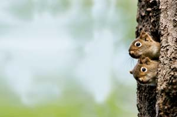 BILL LEA Red squirrels can be chatterboxes as they play. They’re also known to scold each other (and humans!) with a chrrr sound. |
 JANET HORTON The ghostly squeaks of the bull elk are eerie sounds, especially when you hear them at night. |
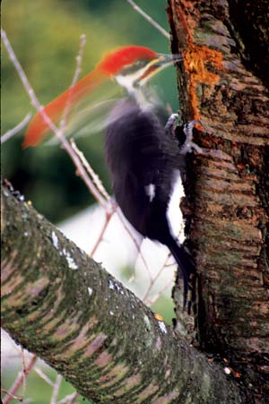 BILL BEATTY The rapid drumming of the pileated woodpecker can be heard throughout much of the United States and Canada. Its call is a loud cuk-cuk-cuk, which rises and falls in pitch and volume. |
|
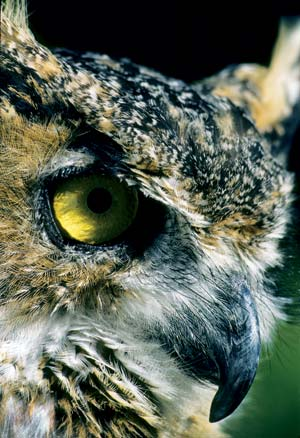 DWIGHT KUHN The distinctive mating calls of the great horned owl can be heard from December through February. |
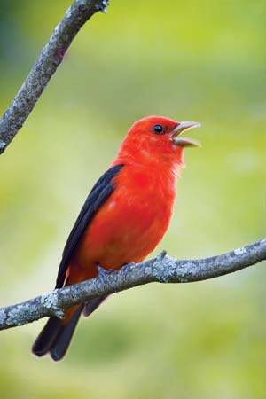 MASLOWSKI PRODUCTIONS Listen for the summer sound (CHICK-bree) of the scarlet tanager and hopefully you’ll be able to spot the brightly colored bird as well. |
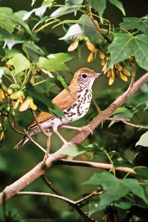 MASLOWSKI PRODUCTIONS The pretty call of the wood thrush can be heard at dawn and dusk in spring throughout the eastern half of the United States. |
|
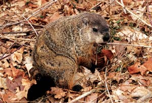 BILL BEATTY Known as the whistle pig, the groundhog puts out a surprisingly sharp sound when alarmed. |
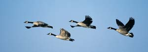 RICHARD DAY/DAYBREAK IMAGERY The familiar wonk, wonk of the Canada goose is a sure sign that autumn has arrived. |
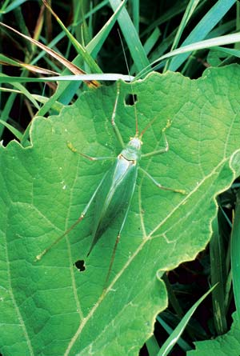 BILL BEATTY The katydid’s rhythmic call starts in late summer and picks up as fall arrives. |
|
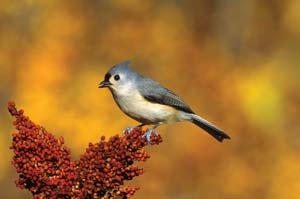 TOMVEZO.COM The tufted titmouse is one of the more vocal birds in winter throughout suburban yards in the Midwest and eastern United States. |
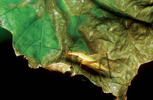 JOE MCDONALD/ANIMALS ANIMALS Hear a snowy tree cricket and you can calculate the temperature. Count the number of chirps in 15 seconds and add 40 to determine the temperature in Fahrenheit. |
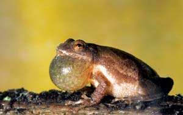 DWIGHT KUHN A pond full of spring peepers can sound like bells jingling. |
|
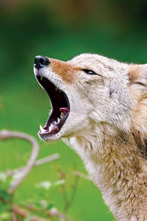 MASLOWSKI PRODUCTIONS The coyote intermingles yips and yaps among its high-pitched howls. |
|
|